U drugoj vježbi sam se upoznala s Illustratom gdje sam radila Bezierove krivulje.
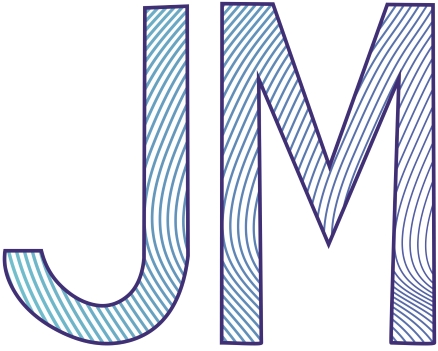
VJEŽBA 3
U trećoj vježbi koristila sam se sustavom boja, transformacijom, multipliciranjem i grupiranjem.
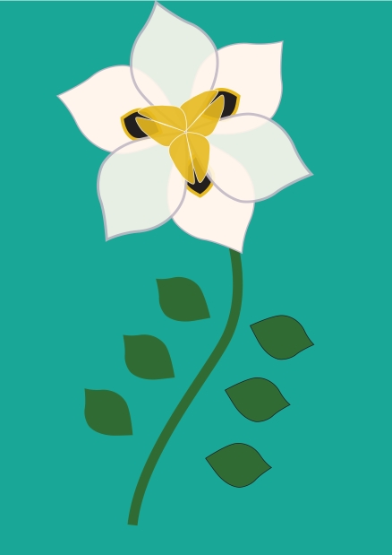
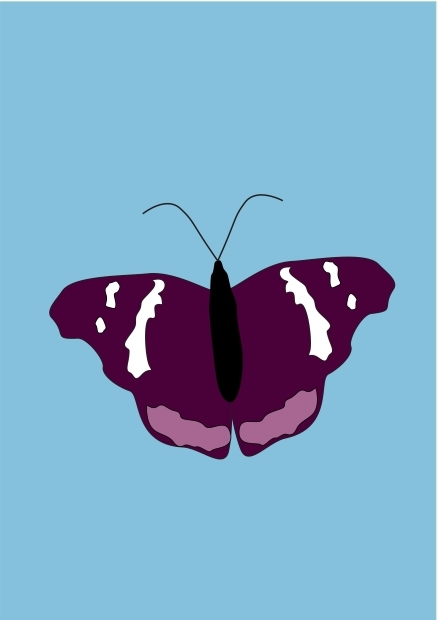
VJEŽBA 4
Zadatak za četvrtu vježbu bio je također u Ilustratoru. U ovoj vježbi koristila sam gradijente, transparenciju te poredak slojeva u izradi složene grafike.
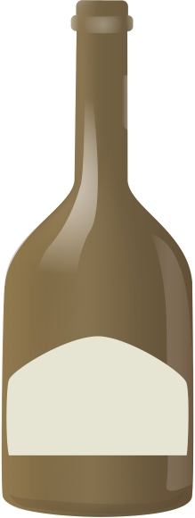
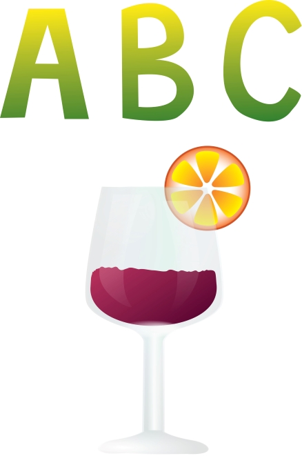
PROJEKTNI ZADATAK 1
Nakon odrađene četiri vježbe morala sam napraviti ilustraciju za projektni zadatak čija je tema bila flora i fauna podmorja.
VJEŽBA 5
Zadatak pete vježbe bilo je korigirati nedostatke na dvije fotografije.
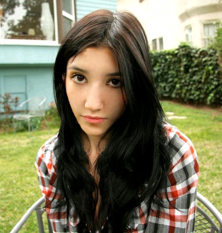
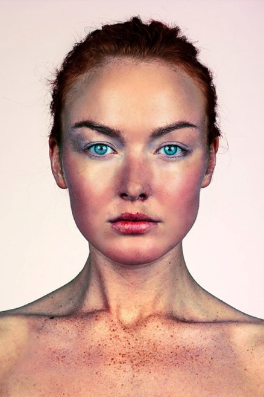
VJEŽBA 6
Zadatak za šestu vježbu bila je kolorizacija fotografije u PHOTOSHOPU.
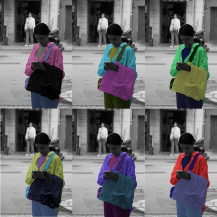
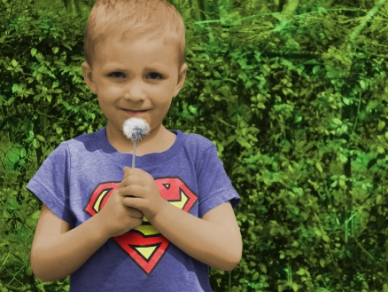
VJEŽBA 7
U sedmoj vježbi zadano nam je napraviti fotomontažu.
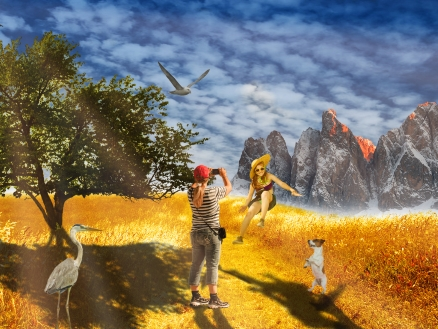
PROJEKTNI ZADATAK 2
Za drugi projektni zadatak morali smo napraviti fotomontažu vlastitih i zadanih elemenata.
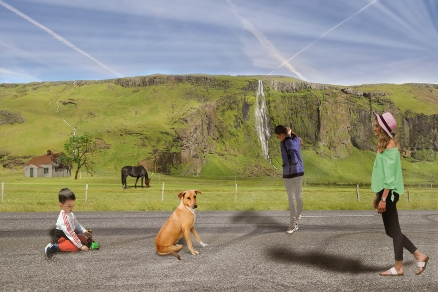
VJEŽBA 8
U osmoj vježbi zadano nam je napraviti kinemagraf.
VJEŽBA 9
Za devetu vježbu imali smo zadatak napraviti vlastiti video s različitim filterima i efektima.
Vježbe 10. i 11.
Za desetu i jedanaestu vježbu trebali smo napraviti svoju stranicu.10. i 11. vježba